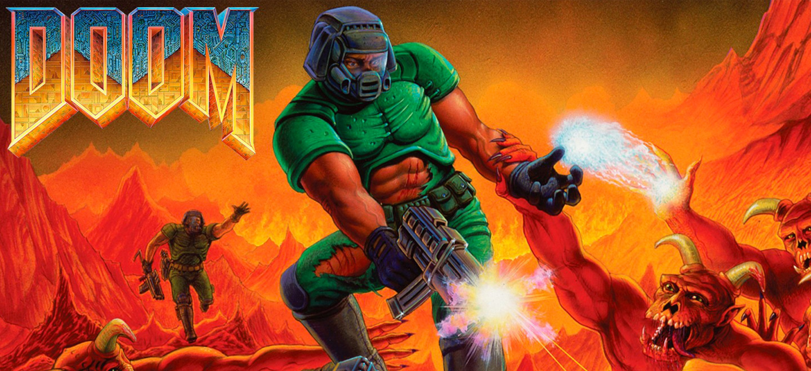

Duis maximus eleifend dui id molestie. Fusce scelerisque ultricies metus sit amet finibus. Morbi et risus mollis, suscipit elit eu, eleifend nisl. Cras id diam nec enim efficitur tempor. Curabitur diam eros, ullamcorper ac mi sit amet, elementum pulvinar odio. Nam ante elit, pellentesque id bibendum quis, cursus et ipsum. Fusce euismod erat tellus, ut blandit mi aliquam vel. Morbi iaculis ligula tincidunt, mollis lorem vitae, faucibus libero. Cras fringilla mattis viverra.
Fusce in elementum lorem. Ut interdum finibus arcu, in feugiat mi. Nulla dolor metus, vulputate at erat a, venenatis dictum ligula. Nulla viverra ut lorem et fringilla. Phasellus sed erat sit amet dolor luctus pharetra. Vivamus lacinia ante est. Cras non ligula vel orci laoreet ultrices. Curabitur sollicitudin eros dapibus, efficitur lectus non, auctor quam. Praesent aliquam lectus ut rhoncus dignissim. Ut tempus ullamcorper tincidunt. Integer ultrices neque quis dictum aliquam. Nunc semper molestie dictum. Nullam libero est, porta vitae lorem in, bibendum venenatis mi. Sed rutrum turpis non ex posuere, fringilla placerat justo volutpat.
Doom
2020-06-09#Video games #FPS

Doom (stylized as DOOM or DooM in other media) is a 1993 first-person shooter developed and published by id Software for MS-DOS. Players assume the role of a space marine, popularly known as "Doomguy", fighting his way through hordes of invading demons from Hell. The first episode, comprising nine levels, was distributed freely as shareware and played by an estimated 15–20 million people within two years; the full game, with two further episodes, was sold via mail order. An updated version with an additional episode, Ultimate Doom, was released in 1995 and sold at retail.
Half-Life is a first-person shooter game developed by Valve and published by Sierra Studios for Windows in 1998. It was Valve's debut product and the first game in the Half-Life series. Players assume the role of Gordon Freeman, a scientist who must find his way out of the Black Mesa Research Facility after it is invaded by aliens. The core gameplay consists of fighting alien and human enemies with a variety of weapons and solving puzzles.
Unlike many other games at the time, the player has almost uninterrupted control of Freeman, and the story is told mostly through scripted sequences seen through his eyes. Valve co-founder Gabe Newell said the team aimed to create an immersive world rather than a "shooting gallery". They built Half-Life using GoldSrc, a heavily modified version of the Quake engine, licensed from id Software.
Half-Life received acclaim for its graphics, realistic gameplay, and seamless narrative. It won over fifty PC "Game of the Year" awards and is considered one of the most influential games of the first-person shooter genre, as well as one of the best video games ever made. By 2008, the game had sold over 9 million copies. It was followed by the expansion packsOpposing Force (1999) and Blue Shift (2001), developed by Gearbox Software. It was ported to the PlayStation 2 in 2001, along with another expansion Half-Life: Decay, and to macOS and Linux in 2013. Valve ported Half-Life to its Source engine in 2004, while a third-party remake, Black Mesa, was released in 2020.